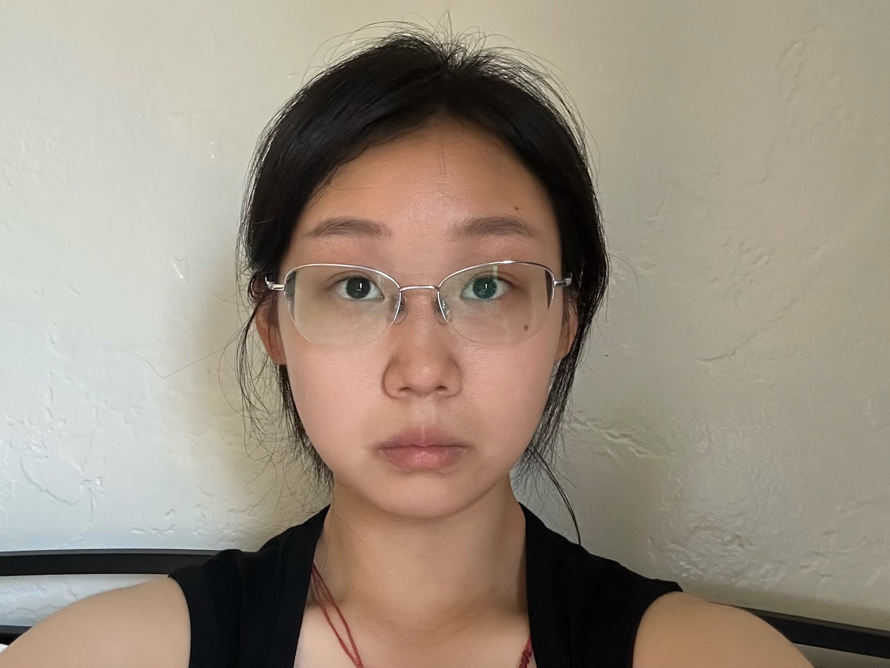

Part 1: Selfie Comparison
A comparison of a close-up selfie (which looks distorted) versus stepping back and zooming in (which gives more natural proportions).

Close-up selfie

Stepped back + zoom
By [Your Name]
A comparison of a close-up selfie (which looks distorted) versus stepping back and zooming in (which gives more natural proportions).
Looking down a long street: one photo taken by zooming in, and the other by walking closer without zoom. The zoomed version compresses distance, while walking changes perspective.


A dolly zoom effect, created by moving back while zooming in. The subject stays the same size, but the background stretches dramatically.